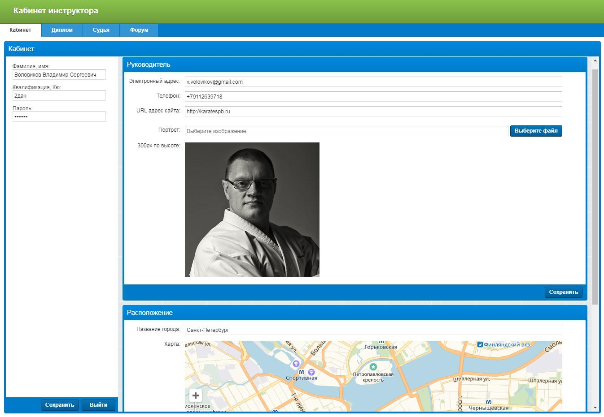
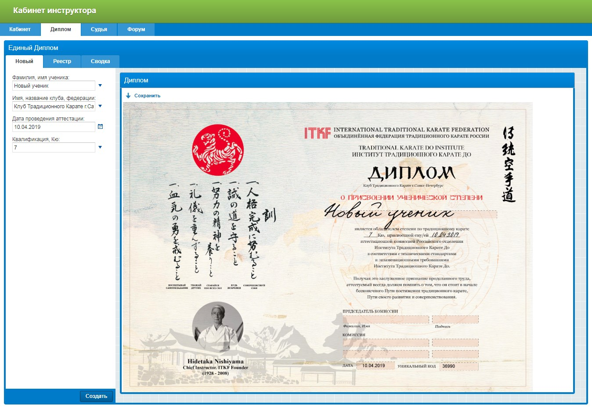
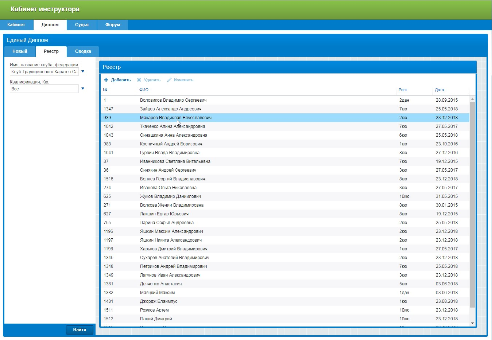
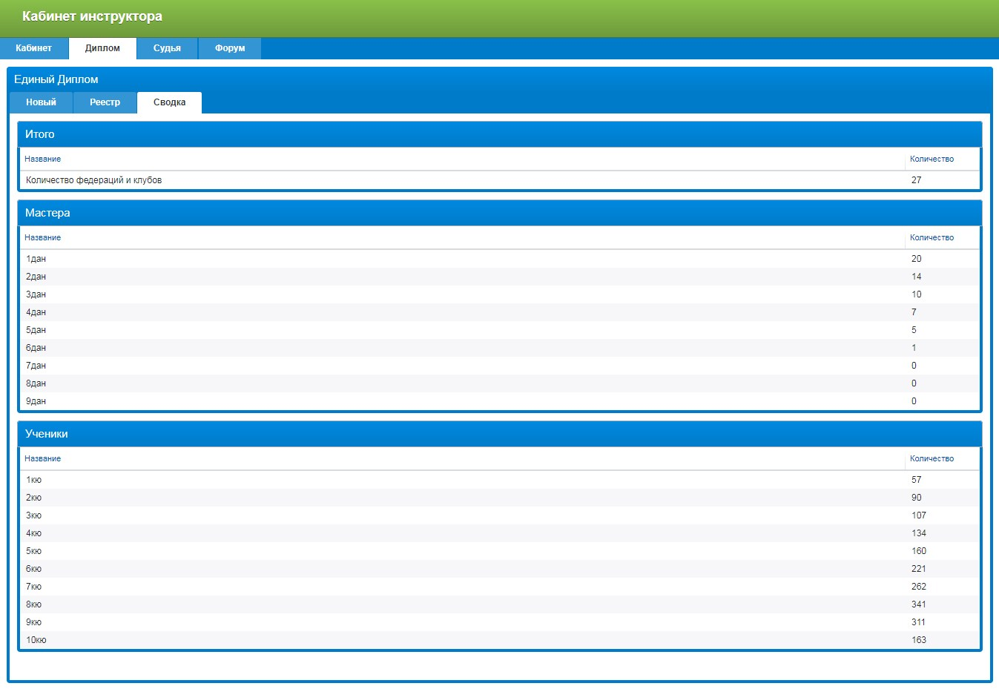
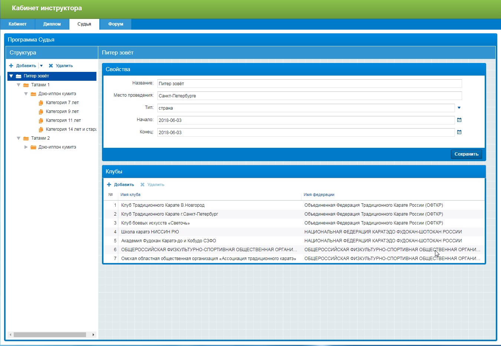
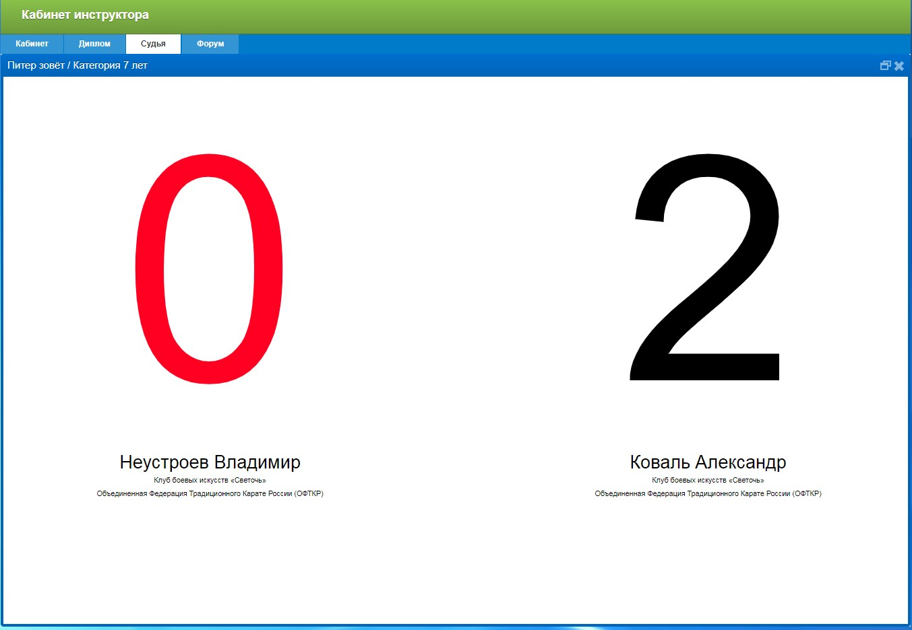
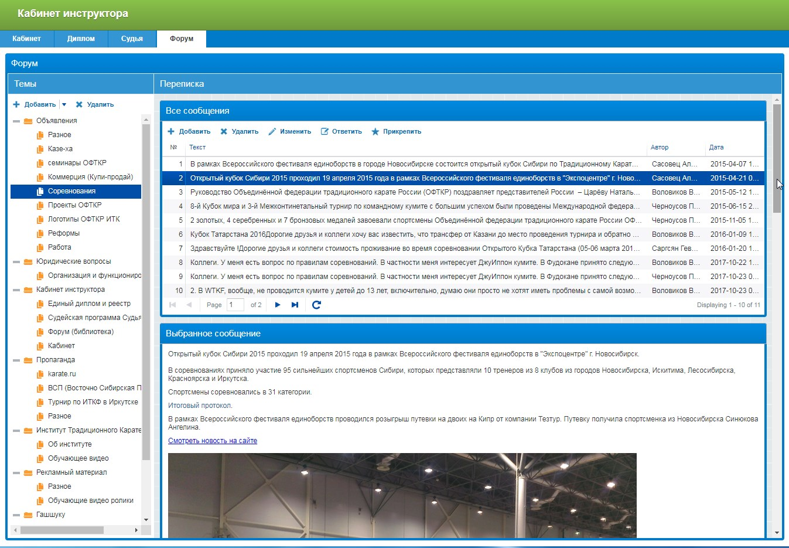

This presentation is an additional material for the 3rd Dan Master Level. In it, in chronological order, the author tells about the events, which were held by him, the purpose of which has always been the popularization of the Traditional Karate.
The idea to create a special program for competition organization was first announced by Sensei Gonza A.B. in summer 2013 at the Dojo Stara Veshch in Poland. Throughout the year were created the first drafts of the program. Its interface has changed. Also were added component parts, modules and were corrected errors. At the moment the program consists of several large parts, in which the organization of competitions is a large, but not the only part.
The first section of the program is called the Cabinet. Here the instructor can upload his photo, as well as specify the city in which he is training. The system will automatically show this place on the map. Here you can also set the name of your club and specify contact details. All these data are necessary for the system to form a single card of the federation members’ presence. Such a card can be placed on the official website of the organization.
At first, it was a small program, that automatically created standard diploma, based on the data, entered into the form. And now it is a part of the instructor's office. With the help of this service all diplomas of all federation clubs will have one general form. Moreover, each diploma is unique. It has a unique number. If to place a form for entering this number on the official website of the federation, then any user can always get comprehensive information about who issued the diploma, which club, which coach and when. This is an excellent quality control system for education.
  This tab opens ‘The Judge”, the program for organization of competitions. It is very important to understand that this is part of the program. It is available to all trainers of the federation. This is not a separate product, but part of the overall system. In the process of creation of the next competition, the coach simply indicates which clubs will participate in the competition. Further, the program will automatically receive a register of students of this club from the Single Diploma, their age and qualifications.
 Any organization needs systems for transfer and storage of the information. In the simplest case, a regular e-mail is such a system. But email addresses are changing. The number of letters constantly grows. It’s difficult to look for information. The forum is part of the Instructor’s Office. Here can be made correspondence. Here it’s possible to store information, such as certification program or some kind of general promotional materials. And also, the Forum will automatically send all information to the Federation Coaches. After all, all the email addresses are known to him.
